L3 Deploy and Manage Virtual Machines (VMs)
1 Create and configure a VM for Windows and Linux
1-1 Availability Sets
- AS is Microsoft best practice
- Meets SLA
- Virtual machine is distributed across fault and update domains
- Ensure one instance is always available during maintenance
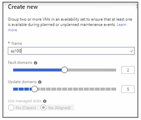
1-2 Availability Zones
- Spread the virtual machine across the separate zones within a region
- Protects from datacenter failure
- Maximum of three zones per region
- Not available in all regions
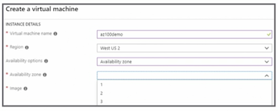
1-3 Virtual Machine Storage
-
Virtual machine has a minimum of two disks
- OS: registered as an SATA disk; C drive (C:);
- max capacity is 2,048 GB
- Temp: page or swap files; D drive (D:);
- stores the pagefile.sys;
- data may be lost;
- do not store files on this disk
- OS: registered as an SATA disk; C drive (C:);
-
Data disks
- Registered as an SCSI disk;
- max capacity is 4,095 GB to a max of 32,767 GB, depending on the virtual machine
1-4 Types of Disks
- Standard HDD
- Cost-effective disks
- Standard SSD
- Recommended for most workloads
- Workloads not requiring high IOPS
- Premium SSD
- Use when running an S series virtual machine
1-5 Managed vs. Unmanaged Disks
-
Unmanaged
- The storage account needs to be managed
- Max IOPS is 20,000 across the storage account
- Use TRIM on standard HDD to delete unused blocks to reduce spend
-
Managed
- The storage account is automatically managed
- Microsoft recommends using managed disks
1-6 Configure Inbound Port Rules
- By default, no traffic can access the virtual machine
- Must select public inbound ports
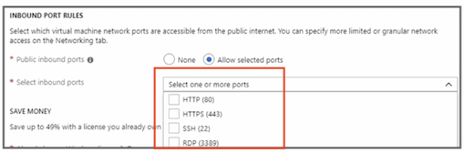
1-7 Configure Networking
- Every virtual machine must be associated to a VNet
- Default subnet is automatically assigned
- Control access via network security group (NSG) using access control lists (ACLs)
- Open inbound ports: default — all inbound Internet traffic is blocked
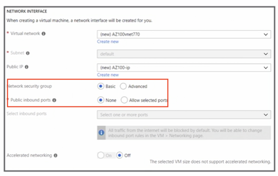
1-8 Configure Monitoring
- Enable boot diagnostics
- Enable OS guest diagnostics
- A diagnostic storage account is required
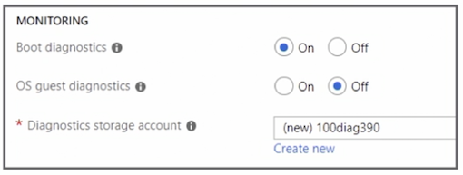
1-9 Configure Virtual Machine
- General purpose
- Compute optimized
- Memory optimized
- Storage optimized
- GPU
- High-performance compute
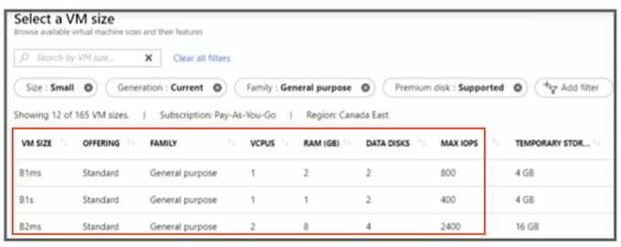
1-10 Scale Sets
- Multiple, identical, load-balanced virtual machines
- Manage all the instances as one
- Instances increase or decrease based on workload or schedule
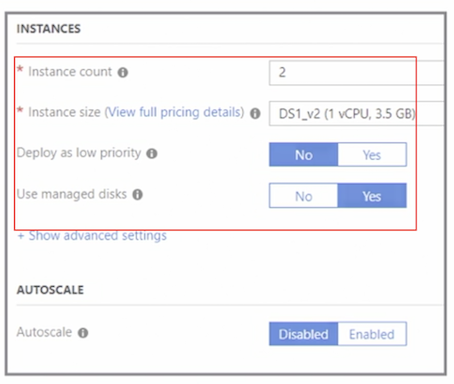
1-11 PowerShell
New-AzureRmVm
-ResourceGroupName "YourResourceGroup"
-Name "YourVM"
-Location "East US"
-VirtualNetworkName "YourVnet"
-SubnetName "YourSubnet"
-SecurityGroupName "YourNetworkSecurityGroup"
-PublicIpAddressName "YourPublicIpAddress"
-OpenPorts 80,3389
1-12 Key Points
- Know how to create a virtual machine
- Understand the virtual machine storage and disk options
- Know and recommend the best virtual machine size based on the performance requirement
- Know when and why to use scale sets
2 Automate deployment of VMs
2-1 Create a VM Template from Deployment
- Build the virtual machine
- Review and create the tab
- Download a template for automation
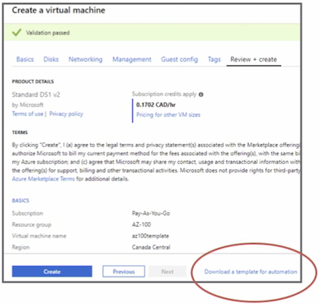
2-2 Create a VM Template
- github
- Azure Template
2-3 Create a Template from scratch
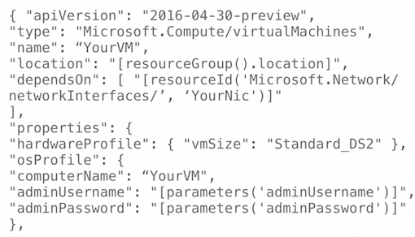
2-4 Basic Json Template
{
"$schema": "http://schema.management.azure.com/schemas/2015-01-01/deploymentTemplate.json#",
"contentVersion": "",
"parameters": { },
"variables": { },
"functions": [ ],
"resources": [ ],
"outputs": { }
}
- schema, contentVersion, parameters, variables, functions, resources, outputs
2-5 Configure VHD Template Windows
"imageReference": {
"publisher": "MicrosoftWindowsServer",
"offer": "WindowsServer",
"sku": "2016-Datacenter",
"version": "latest"
},
2-6 Save Deployment as an ARM Template
- Save when creating the resource
- Save after deployment
- Download, add to the library, or deploy
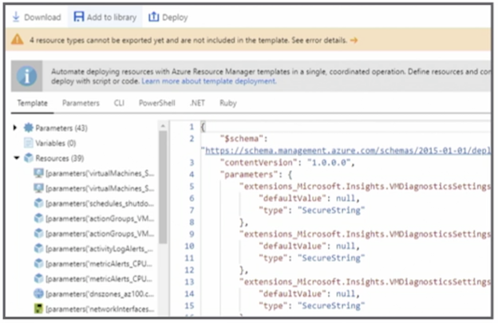
2-7 Modify Azure Resource Manager Template
-
Download and modify a template from
- The resource
- During creation
-
Modify quickstart templates
- Modify an existing template
2-8 Deploy from the Template
- The portal
- Template deployment tool
- Visual Studio Code
- Visual Studio
- PowerShell
2-9 Deploy Virtual Machines from a Template
- Create the resource group
- Create a
template.jsonfile - Create a
parameters.jsonfile - Create a storage account and container
- Upload the files to the storage account
- Deploy the template
2-10 Deploy the Template
$templatePath = "https://" + $storageName + ".blob.core.windows.net/templates/Template.json"
$parametersPath = "https://" + $storageName + ".blob.core.windows.net/templates/Parameters.json"
New-AzureRmResourceGroupDeployment -ResourceGroupName "myResourceGroup" -Name "myDeployment" -TemplateUri $templatePath -TemplateParameterUri $parametersPath
-ResourceGroupName-Name-TemplateUri-TemplateParameterUri
2-11 Key Points
- Be familiar with the basic template structure
- Know where templates can be acquired
- Know the steps to deploy a template using different methods
3 Manage an Azure VM
3-1 Attach a Data Disk
- Microsoft recommends adding disks to virtual machines
- Number of disks that can be added is dependent on the virtual machine size
- Initialize the disk in the virtual machine
- Use TRIM if using FIDD disks
TRIM will delete the empty disk
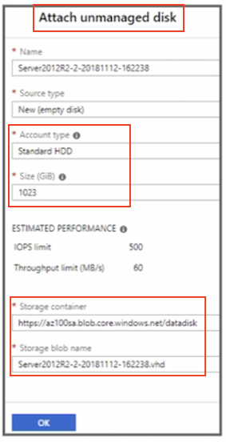
3-2 Attach a Data Disk Using PowerShell
$rg = 'yourResourceGroup'
$vm = 'yourVM'
$location = 'East US'
$storageType = 'Premium LRS'
$dataDisk = $vm + '_disk'
$diskConfig = New-AzureRmDiskConfig -SkuName $storageType -Location $location -CreateOption Empty -DiskSizeGB 128
$dataDisk1 = New-AzureRmDisk -DiskName $dataDisk -Disk $diskConfig -ResourceGroupName $rg
$vm = Get-AzureRmVM -Name $vmName -ResourceGroupName $rg
$vm = Add-AzureRmVMDataDisk -VM $vm -Name SdataDisk -CreateOption Attach -ManagedDiskId $dataDiskl.Id -Lun 1
Update-AzureRmVM -VM $vm -ResourceGroupName $rg
3-3 Add Network Interface
- A virtual machine must have one network interface card (NIC)
Multiple NICsare available depending on the virtual machine- The NIC must be in the same location and subscription as the virtual machine
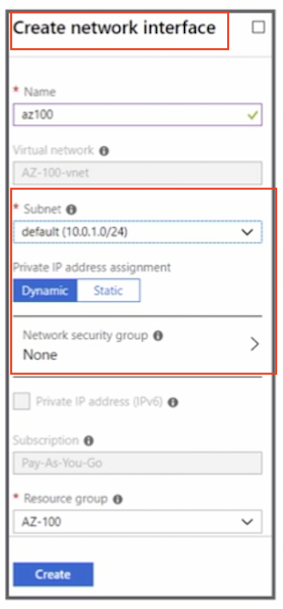
3-4 PowerShell Desired State Configuration
- Ensures the virtual machine always has the desired configuration
- Provides management of the virtual machine
- No snowflakes (They dont become special)
- Doesn't not require an agent
configuration IISInstall
{
node "localhost"
{
WindowsFeature IIS {
Ensure = "Present"
Name = "Web-Server"
}
}
}
Exam: You should be familiar with the basic configuration of desired state configuration
3-5 Use Custom Script Extensions
- Postdeployment and management tasks
- ARM templates
- CLI
- PowerShell
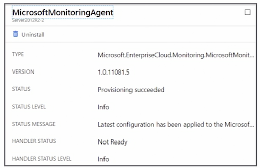
3-6 Change a Virtual Machine Size
- The virtual machine may have to be deallocated
- Select an S version for Premium Storage if already using Premium Storage
- For example, DS2 v2
3-8 Moving Resources
-
Resources are locked during the move
- Cannot add, update, or delete the resource while the resource is being moved
- Applications using the resource will still be available
-
The location of the resource does not change
-
Not all resources can be moved
Moving resources can be tested prior to actual move to determine if the resource can be moved
3-9 Subscription Requirements
-
Different subscriptions
- Must exist in the same Azure Active Directory tenant
-
Resource provider must be registered for the destination subscription
Microsoft.Computemust be registered for a virtual machine
If we were moving a virtual machine, the
Microsoft.Computemust be registered in the destination subscription for that virtual machine
3-10 Permissions Required
- Source resource group Microsoft.
Resources/subscriptions/resourceGroups/moveResources/action
- Destination resource group
Microsoft.Resources/subscriptions/resourceGroups/write
3-11 Redeploy Virtual Machines
- Unable to connect to the virtual machine
- Virtual machine is shut down and is moved to a new node and restarted
- **Dynamic IP will be updated **
- Portal or PowerShell
Set-AzureRmVM -Redeploy -ResourceGroupName "ResourceGroup" -Name "VM"
3-12 Key Points
- Understand the implications of moving resources
- Know the requirements to move resources
- Know why a virtual machine would need to be redeployed
- Know why and how to attach a data disk
4 Manage VM backups
4-11 Configure the Virtual Machine Backup
- Backup can be configured from the virtual machine blade
- Bulk configuration can be configured from the Recovery Services vault
- Can be configured when creating the virtual machine
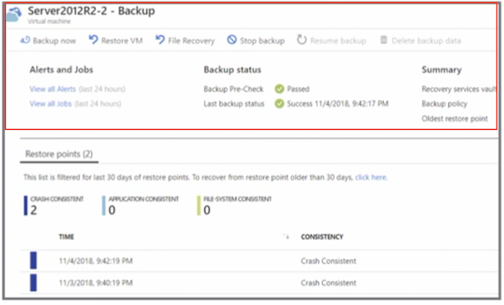
4-12 Create a Backup policy
- Azure virtual machine can only be backed up once a day
- Frequency is either weekly or daily
- Configure additional retention points (For weekly, monthly or yearly backup)
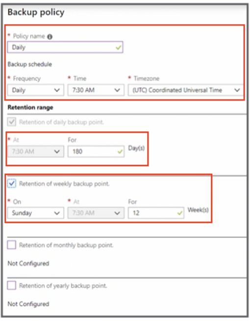
There are 2 options for restoring a VMs, create a new VM or replace existing virtual Machine
4-13 Restore to a New Virtual Machine
- Restored virtual machine will not overwrite the existing virtual machine
- Additional customizations will require PowerShell
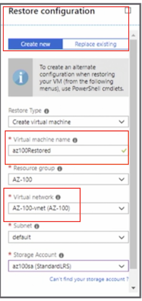
4-14 Restoire Disks
In addition to restoring the entire VM, there is also option to restore the disks only
- Restore special network customizations
- New disks will be created in the selected storage account
- Additional customizations will require PowerShell
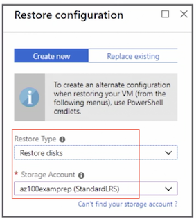
4-15 Replace Existing Virtual Machine
You really can't replace the existing virtual machine,
- Only option is Replace Disk(s)
- Replaces the disks in the existing virtual machine
- The virtual machine must still exist
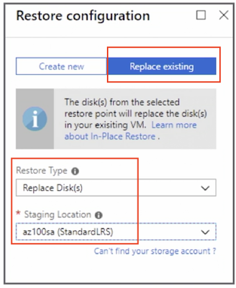
4-16 Restore Files from Azure Virtual Machine Backup
- Download a script and password onto the system where the files are to be restored to a local machine or Azure virtual machine
- The script mounts the disk
- Copy the files that need to be restored to the local system
- Unmount the disks; automatically unmount after 12 hours
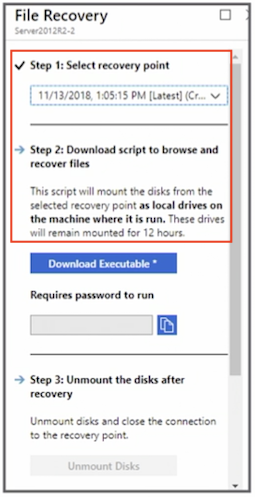
4-17 Key Points
- Know how to create a backup policy
- Understand the limitations of the backup policy
- Know when to restore a full virtual machine vs. disks only
- Practice restoring virtual machines and files